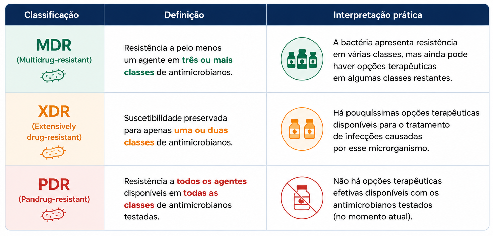

Multirresistência e impacto clínico
A multirresistência corresponde à não suscetibilidade a antibacterianos pertencentes a múltiplas categorias, podendo resultar do acúmulo de diferentes mecanismos de resistência ou, em determinadas situações, da ação de um mecanismo com amplo espectro de substratos. A resistência cruzada, por sua vez, ocorre quando um mesmo mecanismo compromete antibacterianos relacionados, pertencentes à mesma classe ou a classes distintas que compartilham alvo, sítio de ligação ou características estruturais semelhantes 1–3,9,15.
Em bactérias Gram-negativas, esse perfil frequentemente decorre da combinação entre produção de β-lactamases, redução da permeabilidade da membrana, aumento da atividade das bombas de efluxo e alterações do alvo molecular. Como consequência, as opções terapêuticas tornam-se progressivamente mais limitadas, representando um dos principais desafios da prática clínica 1,3,9.
Associe mecanismos e repercussões
Selecione os mecanismos presentes e observe como diferentes processos podem ampliar o perfil de resistência.
Selecione um ou mais mecanismos para observar suas possíveis repercussões.
A presença do mecanismo indica potencial de comprometimento, mas não determina isoladamente a categoria S, I ou R.
A multirresistência não resulta de um único mecanismo, mas da associação de diferentes adaptações bacterianas. Quanto maior o número de mecanismos presentes, maior tende a ser o número de classes de antibacterianos comprometidas e menor a disponibilidade de opções terapêuticas 1–3,9.
MDR, XDR e PDR
Não suscetibilidade a pelo menos um agente em três ou mais categorias de antibacterianos.
Há resistência relevante, mas ainda podem existir diferentes opções terapêuticas.
As classificações MDR, XDR e PDR são utilizadas principalmente para fins de vigilância epidemiológica e padronização da comunicação entre laboratórios e profissionais de saúde, permitindo descrever de forma uniforme o grau de resistência apresentado por um microrganismo 15.
Aplicação clínica
Um paciente internado em unidade de terapia intensiva apresenta infecção por Klebsiella pneumoniae resistente a cefalosporinas, carbapenêmicos, fluoroquinolonas e aminoglicosídeos. A investigação microbiológica demonstra produção de carbapenemase associada à perda de porinas e ao aumento da atividade das bombas de efluxo. Nesse caso, diferentes mecanismos atuam simultaneamente, caracterizando um perfil de multirresistência 3,9,15.